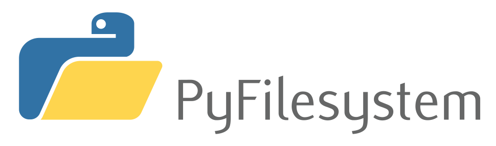

From Local to Cloud: Revolutionizing File Operations Across Languages
Executive Summary
In today’s vast landscape of filesystems, the need for a unified developer experience is more pressing than ever. As
technologies continue to evolve, so too do the complexities and intricacies of how developers interact with storage
solutions. This article delves deep into the world of pyfilesystem2 and its implementations such as s3fs to provide
a seamless experience when dealing with a variety of file systems, from local storage to cloud solutions like Amazon S3
and Ceph.
As a seasoned Python developer with exposure to languages like Rust, Go, and TypeScript, I draw parallels between Pythonic approaches to filesystem abstraction and similar concepts in these languages. We’ll venture into the world of Kubernetes, Docker, and multi-cloud deployment strategies, offering real-world application scenarios and presenting how a unified filesystem experience can revolutionize workflows, especially in containerized and distributed environments.
Whether you’re a Python enthusiast, a multi-language developer, or someone curious about modern filesystem abstractions,
this article provides a comprehensive, insightful journey. From the philosophical underpinnings of pyfilesystem2 to a
hands-on guide on crafting a Ceph experience, and drawing connections across multiple programming languages, there’s
something for everyone.
1. Introduction
In the ever-evolving world of software development, few things remain as consistently challenging as navigating the varied landscape of filesystems. From the on-premise ironclad file servers of yesteryears to today’s cloud-native distributed storage solutions, the ways we handle, store, and retrieve data have undergone monumental shifts. Yet, while the technology has evolved, the fundamental expectations for simplicity, reliability, and efficiency in data management remain steadfast.
As developers, particularly those of us who have witnessed the transition from single-language, monolithic architectures to polyglot, microservice-driven designs, we’ve felt the pinch. Coding in Python by day, switching to Rust or Go for system-level tasks, and perhaps tapping into TypeScript for that reactive front-end by evening – our plates are full. Add the variable of managing files across different systems and clouds, and you’ve got yourself a hefty challenge.
This is where the real pain point emerges: disparate filesystem interfaces. Every storage solution, be it AWS S3, local filesystems, or an enterprise-grade solution like Ceph, often presents its unique API, quirks, and idiosyncrasies. Juggling these differences in a multi-language, multi-system environment isn’t just inconvenient—it’s a productivity drain and a potential source of errors.
Hence, the imperative for a unified developer experience. There’s a pressing need for a singular, consistent approach to filesystem operations, irrespective of the underlying storage mechanism or the language in which we’re coding. A uniform interface not only simplifies our coding endeavors but also fosters efficiency, reduces the margin for error, and, most importantly, lets us focus on crafting the logic that truly matters, rather than getting bogged down by storage intricacies.
In the subsequent sections, we’ll delve into how pyfilesystem2 offers a promising solution to this intricate puzzle, and how, as developers fluent in multiple languages, we can harness its potential to bring about the much-needed harmony in our filesystem operations.
2. A Glimpse into pyfilesystem2

2.1. Embracing the Philosophy: The Core Tenets of pyfilesystem2
In the developer community, where tools are aplenty and frameworks emerge at an astonishing pace, what truly differentiates a library is not just its capability, but the underlying philosophy and principles it adopts. pyfilesystem2 stands out in this regard.
At its core, pyfilesystem2 is built upon the premise that working with files and directories, regardless of where they reside, should be as intuitive as working with Python’s native file operations. It believes in abstraction without compromising on the specificity required for each filesystem. The essence of pyfilesystem2 isn’t to bulldoze the differences of each filesystem but to abstract them in a way that they become seamlessly navigable for the developer.
This clear, developer-centric perspective promotes two fundamental tenets:
- Consistency: Offering the same set of operations, error handling, and behaviors across different filesystems.
- Extensibility: Providing a foundation that’s receptive to the integration of newer filesystems and storage solutions.
2.2. Crafting the Universal Interface: Files and Directories Unleashed
Diving a tad deeper, pyfilesystem2’s real prowess lies in its abstraction. When one considers the diverse filesystems we grapple with - from AWS S3’s object storage nuances to Ceph’s block storage intricacies, the challenge is evident. Each comes with its own conventions, API quirks, and operational semantics.
However, with pyfilesystem2, this multiplicity is elegantly streamlined into a universal interface. Whether you’re
opening a file, listing a directory, or setting permissions, the methods remain largely consistent. The beauty is in the
details: a File.open() in pyfilesystem2 works uniformly, whether the file resides on your local drive, a remote S3
bucket, or a Ceph cluster.
But how does it achieve this uniformity? The secret sauce is in its architecture. By defining abstract base classes and using them as templates, pyfilesystem2 allows for the implementation of specifics pertinent to each filesystem. As developers, especially those versed in languages like Rust and Go, we recognize the power of such interface-driven designs. They offer clarity, enforce structure, and most crucially, provide a robust blueprint for future extensions.
In essence, pyfilesystem2 becomes the bridge – connecting the vast sea of storage solutions with the developer’s need for a consistent, straightforward, and unified file operation experience.
Absolutely! Given your request to further break down the content with sub-subheadings, I’ll continue in the same vein:
3. Dive Deep into s3fs
3.1. Standing on the Shoulders of Giants: Leveraging pyfilesystem2
To understand s3fs, we must first acknowledge that it is a splendid testament to the power and flexibility of pyfilesystem2. By building atop pyfilesystem2’s foundational principles, s3fs manages to encapsulate the complexities of AWS S3 into an approachable, Pythonic interface.
3.1.1. The Challenge of AWS S3
AWS S3, with its distributed nature, eventual consistency, and object storage paradigm, presents a unique set of challenges. Traditional file operations, when mapped directly to S3, can become cumbersome due to the nuances of object storage—like the absence of real directories and the intricacies of handling large files.
3.1.2. s3fs: A Seamless Transition
Enter s3fs. By harnessing the core tenets of pyfilesystem2, s3fs allows developers to work with S3 as if it were a local filesystem. The magic lies in its ability to abstract away S3’s quirks and present a standardized interface. For developers juggling multiple languages—be it Rust’s stringent type system, Go’s straightforward approach, or TypeScript’s flexible typing—having such an interface in Python is like a breath of fresh air.
3.2. The Anatomy of the Interface
While s3fs’s charm lies in its simplicity, understanding its inner workings can provide a deeper appreciation and more effective utilization.
3.2.1. The Power of Abstraction
At the heart of s3fs lies the power of abstraction that pyfilesystem2 champions. The same methods that apply to local file systems—like opening, reading, or writing—apply equally to S3 when using s3fs. This ensures that, as developers, our mental model remains consistent, irrespective of the underlying storage mechanism.
3.2.2. Specifics & Optimizations
However, a one-size-fits-all approach could be limiting, especially considering the optimizations that S3-specific operations might necessitate. Thankfully, s3fs strikes a delicate balance. It provides avenues to tap into S3-specific features, such as multi-part uploads or fine-grained ACLs, without deviating from the universal interface philosophy.
3.2.3. A Multi-language Perspective
From a polyglot developer’s perspective, the s3fs approach mirrors the interface-driven designs we see in languages like Rust or Go. Just as Rust’s traits or Go’s interfaces allow us to define consistent behaviors across diverse types, s3fs provides a consistent filesystem behavior across diverse storage solutions. This universality becomes instrumental in ensuring productivity and reducing cognitive overhead.
4. Design Rationale & The Dev Experience
4.1. The Allure of a ‘Local-Like’ Operating Feel
In the realm of development, familiarity breeds productivity. The less cognitive friction we face while switching contexts, the more we can focus on the crux of our task. This is why a ‘local-like’ operating feel is not just a matter of convenience, but a significant boost to our efficiency.
Imagine you’re switching between various storage solutions throughout your application. The mental overhead of remembering different operational nuances can be staggering. With a consistent ‘local-like’ interface, we eliminate this overhead, leading to fewer errors and more streamlined development.
Code example: A comparison between traditional AWS S3 operations and using s3fs with a ‘local-like’ interface.
4.2. Abstracting File Operations with pyfilesystem2: A Pythonic Approach and its Parallels in Rust & Go
Abstraction is at the heart of programming. In Python, pyfilesystem2 exemplifies the ‘Pythonic’ way—creating interfaces that are intuitive, clean, and elegant. By doing so, it achieves a dual feat: simplifying the complexities of varied filesystems while promoting extensibility.
From a polyglot’s perspective, the design choices mirror practices in Rust and Go. Rust, with its trait system, allows us to define shared behaviors across different types. Similarly, in Go, interfaces give us a way to abstract and generalize behaviors. Drawing parallels:
Python (pyfilesystem2):
- Define a common set of operations.
- Extend and customize these operations for specific filesystems.
Rust:
- Define a trait with certain behaviors.
- Implement this trait for different data types, customizing as needed.
Go:
- Define an interface.
- Implement the interface for various structs, adding specificity where required.
Code example: Demonstrating file operations in pyfilesystem2 and drawing parallels with a Rust trait and a Go interface.
4.3. Relishing the Unified Dev Experience through s3fs
With the foundations set by pyfilesystem2, s3fs takes the experience a notch higher. It’s not just about abstracting AWS S3’s complexities; it’s about providing a cohesive, unified developer experience. With s3fs, the operations are predictable, the interface familiar, and the outcomes consistent, irrespective of whether you’re working locally or with cloud storage.
This unified experience means fewer surprises and more confidence in the code we write. For developers accustomed to the rigors of Rust, the flexibility of TypeScript, and the simplicity of Go, s3fs in Python feels like coming home.
Code example: Demonstrating how s3fs offers a unified developer experience, abstracting away the complexities of AWS S3.
5. Real-world Application Scenarios
1. Dockerized Deployment Without Volume Mounts: Redefining Docker Deployment Strategies with Virtual Storage Experiences
Traditional Docker deployments often rely on volume mounts to persist data beyond a container’s lifecycle. This practice, although functional, can sometimes lead to intricacies, especially in complex multi-container setups. With the advent of pyfilesystem2 and similar paradigms, we can shift towards a model where virtual storage replaces traditional volume mounts.
Instead of mapping local storage or external drives, configurations via environment variables can redirect application data to S3-like services, or other compatible storage backends. This shift not only streamlines deployment but also amplifies the flexibility in scaling and replication.
Code example : Demonstrating a Dockerized application using pyfilesystem2 to store data in a virtual storage.
import os
from fs.mountfs import MountFS
from fs_s3fs import S3FS
class FileSystemType:
Aws = 'aws'
Minio = 'minio'
Oss = 'oss'
Mount = 'mount'
Ceph = 'ceph'
class FileManager:
def __init__(self):
self.virtual_fs = self.init_virtual_fs()
def init_virtual_fs(self):
"""Initialize the virtual filesystem based on environment variables."""
# Configuration variables
ENABLE_S3 = os.environ.get('ENABLE_S3', 'False').lower() == 'true'
FS_TYPE = os.environ.get('FS_TYPE', 'minio') # Default is Minio
BUCKET_NAME = os.environ.get('BUCKET_NAME', '')
S3_KEY_ID = os.environ.get('S3_KEY_ID', '') # Your key ID here
S3_KEY_SECRET = os.environ.get('S3_KEY_SECRET', '') # Your secret key here
S3_ENDPOINT = os.environ.get('S3_ENDPOINT', '') # Endpoint URL
folder = '/'
virtual_fs = MountFS()
s3_config = {
"bucket_name": BUCKET_NAME,
"dir_path": folder,
"aws_access_key_id": S3_KEY_ID,
"aws_secret_access_key": S3_KEY_SECRET,
"endpoint_url": S3_ENDPOINT
}
if FS_TYPE == FileSystemType.Aws:
s3_config["region"] = os.environ.get("AWS_REGION", "")
s3fs = S3FS(**s3_config)
elif FS_TYPE == FileSystemType.Minio:
s3fs = S3FS(**s3_config)
elif FS_TYPE == FileSystemType.Oss:
s3_config["s3_config"] = {'addressing_style': 'virtual'}
s3fs = S3FS(**s3_config)
else:
raise Exception(f'Unsupported filesystem type: {FS_TYPE}')
virtual_fs.mount('/', s3fs)
return virtual_fs
def add_file(self, path, content):
"""Add a file to the virtual filesystem."""
with self.virtual_fs.open(path, 'wb') as file:
file.write(content)
def get_file(self, path):
"""Retrieve a file from the virtual filesystem."""
with self.virtual_fs.open(path, 'rb') as file:
return file.read()
def delete_file(self, path):
"""Delete a file from the virtual filesystem."""
if self.virtual_fs.exists(path):
self.virtual_fs.remove(path)
def update_file(self, path, content):
"""Update a file in the virtual filesystem."""
self.add_file(path, content)
if __name__ == "__main__":
# Demonstration
# Before running, set appropriate environment variables: ENABLE_S3, BUCKET_NAME, S3_KEY_ID, S3_KEY_SECRET, and optionally S3_ENDPOINT and FS_TYPE.
manager = FileManager()
# Test operations
test_path = '/test.txt'
manager.add_file(test_path, b"Hello World!")
print(f"Content of {test_path}: {manager.get_file(test_path)}")
manager.update_file(test_path, b"Updated content.")
print(f"Updated content of {test_path}: {manager.get_file(test_path)}")
manager.delete_file(test_path)
print(f"File {test_path} deleted!")
2. Kubernetes (K8s) Storage Abstraction: A Seamless Filesystem Experience for Each Pod, Irrespective of the Storage Solution in Play
Kubernetes has transformed how applications are orchestrated and scaled in a clustered environment. Storage, however, remains a nuanced challenge. Pods, ephemeral by nature, demand persistent and consistent storage solutions. By leveraging pyfilesystem2’s principles, one can abstract the underlying storage solution, offering a uniform filesystem experience for every pod.
Such abstraction ensures that developers focus on application logic, rather than intricate storage details, thus simplifying application deployment in K8s clusters.
Code example: Displaying a K8s configuration with abstracted storage backends.
# k8s-config.yaml
apiVersion: v1
kind: ConfigMap
metadata:
name: storage-config
data:
ENABLE_S3: "True"
FS_TYPE: "minio"
BUCKET_NAME: "your-bucket-name"
S3_ENDPOINT: "http://your-minio-service-endpoint:9000"
---
apiVersion: v1
kind: Secret
metadata:
name: storage-secrets
type: Opaque
stringData:
S3_KEY_ID: "your-key-id"
S3_KEY_SECRET: "your-key-secret"
---
apiVersion: apps/v1
kind: Deployment
metadata:
name: storage-deployment
spec:
replicas: 1
selector:
matchLabels:
app: storage-app
template:
metadata:
labels:
app: storage-app
spec:
containers:
- name: storage-container
image: your-docker-image:latest
env:
- name: ENABLE_S3
valueFrom:
configMapKeyRef:
name: storage-config
key: ENABLE_S3
- name: FS_TYPE
valueFrom:
configMapKeyRef:
name: storage-config
key: FS_TYPE
- name: BUCKET_NAME
valueFrom:
configMapKeyRef:
name: storage-config
key: BUCKET_NAME
- name: S3_ENDPOINT
valueFrom:
configMapKeyRef:
name: storage-config
key: S3_ENDPOINT
- name: S3_KEY_ID
valueFrom:
secretKeyRef:
name: storage-secrets
key: S3_KEY_ID
- name: S3_KEY_SECRET
valueFrom:
secretKeyRef:
name: storage-secrets
key: S3_KEY_SECRET
3. Multi-cloud Deployment: Achieving Storage Backend Interchangeability Across Major Cloud Service Providers
The multi-cloud strategy is becoming more of a necessity than a luxury. Businesses spread their resources across AWS, Azure, Google Cloud, and others for resilience and optimized costs. However, each cloud provider has its proprietary storage solution, leading to potential inconsistencies in filesystem operations.
By employing a unifying layer like pyfilesystem2, developers can ensure consistent file operations irrespective of the cloud provider in play. It essentially means backend interchangeability without compromising on the coding experience.
Code example: Showcasing file operations that remain consistent across AWS S3, Azure Blob Storage, and Google Cloud Storage.
import os
from fs.mountfs import MountFS
from fs_s3fs import S3FS
class FileSystemType:
Aws = 'aws'
Azure = 'azure' # Assuming Azure Blob Storage provides an S3 compatible interface
GCS = 'gcs' # Assuming GCS provides an S3 compatible interface
class FileManager:
def __init__(self):
self.virtual_fs = self.init_virtual_fs()
def init_virtual_fs(self):
"""Initialize the virtual filesystem based on environment variables."""
# Configuration variables
FS_TYPE = os.environ.get('FS_TYPE', 'aws') # Default is AWS
BUCKET_NAME = os.environ.get('BUCKET_NAME', '')
S3_KEY_ID = os.environ.get('S3_KEY_ID', '')
S3_KEY_SECRET = os.environ.get('S3_KEY_SECRET', '')
S3_ENDPOINT = os.environ.get('S3_ENDPOINT', '') # Endpoint URL depending on the storage type
folder = '/'
virtual_fs = MountFS()
s3_config = {
"bucket_name": BUCKET_NAME,
"dir_path": folder,
"aws_access_key_id": S3_KEY_ID,
"aws_secret_access_key": S3_KEY_SECRET,
"endpoint_url": S3_ENDPOINT
}
if FS_TYPE == FileSystemType.Aws:
s3_config["region"] = os.environ.get("AWS_REGION", "")
elif FS_TYPE == FileSystemType.Azure:
# Specific configurations for Azure if any
pass
elif FS_TYPE == FileSystemType.GCS:
# Specific configurations for GCS if any
pass
else:
raise Exception(f'Unsupported filesystem type: {FS_TYPE}')
s3fs = S3FS(**s3_config)
virtual_fs.mount('/', s3fs)
return virtual_fs
def add_file(self, path, content):
"""Add a file to the virtual filesystem."""
with self.virtual_fs.open(path, 'wb') as file:
file.write(content)
def get_file(self, path):
"""Retrieve a file from the virtual filesystem."""
with self.virtual_fs.open(path, 'rb') as file:
return file.read()
def delete_file(self, path):
"""Delete a file from the virtual filesystem."""
if self.virtual_fs.exists(path):
self.virtual_fs.remove(path)
def update_file(self, path, content):
"""Update a file in the virtual filesystem."""
self.add_file(path, content)
if __name__ == "__main__":
# Demonstration
# Before running, set appropriate environment variables: FS_TYPE, BUCKET_NAME, S3_KEY_ID, S3_KEY_SECRET, and S3_ENDPOINT.
manager = FileManager()
# Test operations
test_path = '/test.txt'
manager.add_file(test_path, b"Hello from S3-like storage!")
print(f"Content of {test_path}: {manager.get_file(test_path)}")
manager.update_file(test_path, b"Updated content.")
print(f"Updated content of {test_path}: {manager.get_file(test_path)}")
manager.delete_file(test_path)
print(f"File {test_path} deleted!")
4. Data Pipeline Abstraction: Streamlining Data Access and Storage in Big Data and ML Workflows
In the realms of Big Data and Machine Learning, data access, processing, and storage often form intricate pipelines. Different stages might demand different storage solutions — from high-speed local SSDs for computation to cloud-based solutions for long-term archival.
With an abstracted filesystem approach, one can simplify these pipelines, making it easier to fetch, process, and store data, regardless of where it resides. This simplification not only streamlines workflows but can also lead to performance gains.
Code example: Outlining a data pipeline that seamlessly integrates local and cloud storage.
import os
from fs.mountfs import MountFS
from fs.osfs import OSFS
from fs_s3fs import S3FS
class DataPipeline:
def __init__(self):
self.virtual_fs = self.init_virtual_fs()
def init_virtual_fs(self):
"""Initialize a virtual filesystem combining local and cloud storage."""
# Configurations for local and cloud storage
LOCAL_DIR = os.environ.get('LOCAL_DIR', '/tmp') # Local directory for computation-intensive tasks
CLOUD_BUCKET_NAME = os.environ.get('CLOUD_BUCKET_NAME', '')
S3_KEY_ID = os.environ.get('S3_KEY_ID', '')
S3_KEY_SECRET = os.environ.get('S3_KEY_SECRET', '')
S3_ENDPOINT = os.environ.get('S3_ENDPOINT', '')
virtual_fs = MountFS()
# Mount local filesystem
local_fs = OSFS(LOCAL_DIR)
virtual_fs.mount('/local', local_fs)
# Mount S3 cloud storage
cloud_fs = S3FS(
CLOUD_BUCKET_NAME,
aws_access_key_id=S3_KEY_ID,
aws_secret_access_key=S3_KEY_SECRET,
endpoint_url=S3_ENDPOINT
)
virtual_fs.mount('/cloud', cloud_fs)
return virtual_fs
def process_data(self, local_path, cloud_path):
"""Fetch data from cloud, process it, and store results both locally and in the cloud."""
# Assume data resides in cloud storage initially
# Fetch data from cloud storage to local for processing
with self.virtual_fs.open(f'/cloud/{cloud_path}', 'rb') as source:
with self.virtual_fs.open(f'/local/{local_path}', 'wb') as target:
target.write(source.read())
# Process the data (here, a simple example: doubling the content for illustrative purposes)
with self.virtual_fs.open(f'/local/{local_path}', 'rb') as file:
data = file.read()
processed_data = data + data
# Save the processed data locally
with self.virtual_fs.open(f'/local/{local_path}', 'wb') as file:
file.write(processed_data)
# Also, archive the processed data back to cloud storage
with self.virtual_fs.open(f'/cloud/{cloud_path}', 'wb') as file:
file.write(processed_data)
print(f"Processed data saved at {local_path} (local) and {cloud_path} (cloud).")
if __name__ == "__main__":
# Ensure the environment variables: LOCAL_DIR, CLOUD_BUCKET_NAME, S3_KEY_ID, S3_KEY_SECRET, and S3_ENDPOINT are set before execution.
pipeline = DataPipeline()
pipeline.process_data("processed_data.txt", "raw_data.txt")
- This code example initializes a combined filesystem consisting of local and cloud storage.
- The data processing involves:
- fetching raw data from cloud storage
- processing it locally (for performance benefits)
- and saving the processed data in both local and cloud storage
- This shows the flexibility of seamlessly integrating different storage backends in a data pipeline.
6. Rolling Up the Sleeves: Crafting a Ceph Experience
6.1. A Primer on the Ceph Filesystem
Ceph, a unified, distributed storage system, is designed for performance, reliability, and scalability. It provides three types of storage in a single cluster: object, block, and file storage. At the core of Ceph’s design lies its ability to distribute data, manage data replication, and provide fault tolerance. For developers familiar with diverse storage solutions, understanding Ceph’s nuances is crucial for optimal implementation.
Code example: A brief illustration of basic Ceph operations and configurations.
import rados
def initialize_ceph_cluster():
"""Initialize a connection to the Ceph cluster."""
# Configuration path
ceph_conf = '/etc/ceph/ceph.conf'
# Create a connection to the Ceph cluster
cluster = rados.Rados(conffile=ceph_conf)
cluster.connect()
return cluster
def list_pools(cluster):
"""List all pools in the Ceph cluster."""
return cluster.list_pools()
def create_pool(cluster, pool_name):
"""Create a new pool."""
cluster.create_pool(pool_name)
def remove_pool(cluster, pool_name):
"""Remove an existing pool."""
cluster.delete_pool(pool_name)
def store_object(ioctx, object_name, data):
"""Store an object in the pool."""
ioctx.write(object_name, data)
def read_object(ioctx, object_name):
"""Read an object from the pool."""
return ioctx.read(object_name)
def delete_object(ioctx, object_name):
"""Delete an object from the pool."""
ioctx.remove_object(object_name)
if __name__ == "__main__":
# Initialize the cluster connection
cluster = initialize_ceph_cluster()
# List existing pools
print("Existing pools:", list_pools(cluster))
# Create a new pool
pool_name = 'demo_pool'
create_pool(cluster, pool_name)
print(f"Created pool: {pool_name}")
# Connect to the pool
ioctx = cluster.open_ioctx(pool_name)
# Store an object
obj_name = 'test_object'
store_object(ioctx, obj_name, b"Hello, Ceph!")
print(f"Stored object: {obj_name}")
# Read the object
data = read_object(ioctx, obj_name)
print(f"Data from {obj_name}: {data.decode()}")
# Delete the object
delete_object(ioctx, obj_name)
print(f"Deleted object: {obj_name}")
# Cleanup: Close the pool and remove it
ioctx.close()
remove_pool(cluster, pool_name)
print(f"Removed pool: {pool_name}")
# Shutdown the connection to the cluster
cluster.shutdown()
- This code provides an overview of basic operations in Ceph, such as creating a pool, storing, reading, and deleting an object.
- Before executing, ensure the rados Python library is installed, the Ceph cluster is running, and the configuration
file
/etc/ceph/ceph.confis properly set up. - This example also demonstrates the basic interaction with a Ceph cluster.
- It’s a basic illustration, and in real-world applications, Ceph configurations and operations could be more complex depending on the requirements.
6.2. Bridging Ceph with pyfilesystem2: Design Considerations and Challenges
Given pyfilesystem2’s vision for universal filesystem interfaces, integrating Ceph presents a challenging yet rewarding endeavor.
Design Considerations:
- Diverse Storage Types: Ceph’s diverse storage offerings mean that our abstraction needs to account for object, block, and file storage - each with its nuances.
- Scalability and Performance: Ensuring that the abstraction doesn’t hamper Ceph’s innate scalability is paramount.
- Error Handling: With distributed systems come unique errors and exceptions. A robust integration ensures these are communicated clearly and handled appropriately.
Challenges:
- Maintaining Abstraction: Striking a balance between offering a generic interface and tapping into Ceph’s unique features can be intricate.
- Handling Distributed Operations: Coordinating actions across distributed nodes and managing eventual consistency is inherently complex.
Code example: Highlighting a few complexities when integrating Ceph with pyfilesystem2, possibly by showcasing direct operations and the challenges they present when abstracting.
import rados
from fs.base import FS
from fs.errors import ResourceNotFound
class CephFS(FS):
def __init__(self, ceph_conf="/etc/ceph/ceph.conf"):
self.cluster = rados.Rados(conffile=ceph_conf)
self.cluster.connect()
self.ioctx = None
def set_pool(self, pool_name):
"""Set the pool for operations."""
if self.ioctx:
self.ioctx.close()
self.ioctx = self.cluster.open_ioctx(pool_name)
# Implement FS Abstract Methods
def getinfo(self, path, namespaces=None):
# Challenge: Handling diverse storage types
pass
def listdir(self, path):
# Challenge: Handling distributed operations
pass
def makedir(self, path, permissions=None, recreate=False):
# Challenge: Need to account for object, block, and file storage types
pass
def openbin(self, path, mode="r", buffering=-1, **options):
# Challenge: Error Handling
if not self.ioctx:
raise Exception("Pool not set.")
try:
return self.ioctx.read(path)
except Exception as e:
raise ResourceNotFound(f"Failed to read {path}. Error: {e}")
def remove(self, path):
# Challenge: Error Handling and Ensuring Scalability
if not self.ioctx:
raise Exception("Pool not set.")
try:
self.ioctx.remove_object(path)
except Exception as e:
raise ResourceNotFound(f"Failed to delete {path}. Error: {e}")
def close(self):
if self.ioctx:
self.ioctx.close()
self.cluster.shutdown()
if __name__ == "__main__":
fs = CephFS()
fs.set_pool('demo_pool')
data = fs.openbin('test_object')
print(f"Data from test_object: {data.decode()}")
fs.remove('test_object')
In this example:
-
Diverse Storage Types: We have aset_poolmethod that would allow switching between object, block, and file storage within Ceph. However, implementing methods that can handle all these storage types is challenging. -
Scalability and Performance: The use of pyfilesystem2’s FS abstract methods may not be able to fully leverage Ceph’s scalability. For example, methods likelistdircould be expensive in a large Ceph cluster. -
Error Handling: In distributed systems, many things can go wrong. Here, we raiseResourceNotFoundif the object isn’t available. However, in a more robust system, more advanced error-handling would be necessary. -
Maintaining Abstraction: The example uses the FS abstract methods but would need to be extended to allow for unique features of Ceph. -
Handling Distributed Operations: The example is simple and doesn’t cover the complexities of distributed operations, such as eventual consistency.
This is a simplified example; in a real-world scenario, you’ll need to handle these complexities in greater detail.
**6.3. Step-by-Step Walkthrough: Bridging Python’s Class Inheritance with Interface Implementation in TypeScript,
Golang, and Rust**
|Aspect / Language|Python (with pyfilesystem2)|TypeScript|Golang|Rust|
|-----------------|---------------------------|----------|------|----|
|Core Mechanism|Class Inheritance|Interfaces|Interfaces|Traits|
|Description|Inherits from base classes and overrides methods for specific operations.|Defines an interface with expected operations, then implements it.|Defines an interface with method signatures, then creates structs to implement these.|Defines a trait for operations and then implements it for specific types or structs.|
|Strengths|Seamless integration with a broader ecosystem. Ability to extend and modify parent classes.|Strong type safety, aligns well with object-oriented patterns, clear contract definition.|Strong static typing, clear distinction between interface and implementation, implicit interface implementation.|Strong type system, ownership semantics, and ability to apply traits to existing types.|
|Sample Usage|Code example: See As Below|Code example: See As Below|Code example: See As Below|Code example: See As Below|
Python’s Approach with pyfilesystem2 for Ceph:
- Start with inheriting from pyfilesystem2’s base classes.
- Override methods to cater to Ceph-specific operations.
- Ensure seamless integration with the broader pyfilesystem2 ecosystem.
Code example: Demonstrating the process of creating a Ceph adapter in Python using pyfilesystem2.
# coding: utf-8
import boto3
import threading
from fs.opener import Opener
from fs.opener.errors import OpenerError
from fs.base import FS
from fs.errors import ResourceNotFound, FileExists, ResourceError
class CephFSOpener(Opener):
protocols = ["ceph"]
def open_fs(self, fs_url, parse_result, writeable, create, cwd):
bucket_name, _, dir_path = parse_result.resource.partition("/")
if not bucket_name:
raise OpenerError("invalid bucket name in '{}'".format(fs_url))
ceph_fs = CephFS(
bucket_name,
dir_path=dir_path or "/",
ceph_access_key_id=parse_result.username or None,
ceph_secret_access_key=parse_result.password or None,
endpoint_url=parse_result.params.get("endpoint_url", None),
)
return ceph_fs
class CephFS(FS):
_meta = {
"case_insensitive": False,
"invalid_path_chars": "\0",
"network": True,
"read_only": False,
"thread_safe": True,
"unicode_paths": True,
"virtual": False,
}
def __init__(
self,
bucket_name,
dir_path="/",
ceph_access_key_id=None,
ceph_secret_access_key=None,
endpoint_url=None,
):
self._bucket_name = bucket_name
self.dir_path = dir_path
self._prefix = relpath(normpath(dir_path)).rstrip("/")
self.ceph_access_key_id = ceph_access_key_id
self.ceph_secret_access_key = ceph_secret_access_key
self.endpoint_url = endpoint_url # Endpoint for Ceph's S3 gateway
# Initializing boto3 session and resource
self.session = boto3.session.Session(
aws_access_key_id=self.ceph_access_key_id,
aws_secret_access_key=self.ceph_secret_access_key
)
self.s3_resource = self.session.resource('s3', endpoint_url=self.endpoint_url)
# Ensure we're thread-safe
self._lock = threading.RLock()
super(CephFS, self).__init__()
def _get_bucket(self):
return self.s3_resource.Bucket(self._bucket_name)
def getinfo(self, path, namespaces=None):
with self._lock:
try:
s3_object = self._get_bucket().Object(path)
s3_object.load()
# Here you'd map the s3 object details to the expected info structure
# This is just a simple example:
info = {
"name": s3_object.key,
"size": s3_object.content_length,
"modified": s3_object.last_modified,
}
return info
except Exception as e:
raise ResourceNotFound("No resource found at path: {}".format(path))
# Similar methods for read, write, delete, etc.
# Example:
def readbytes(self, path):
with self._lock:
try:
s3_object = self._get_bucket().Object(path)
return s3_object.get()['Body'].read()
except Exception as e:
raise ResourceError("Error reading resource at path: {}".format(path))
def writebytes(self, path, content):
with self._lock:
try:
s3_object = self._get_bucket().Object(path)
s3_object.put(Body=content)
except Exception as e:
raise ResourceError("Error writing to path: {}".format(path))
# Continue to implement other methods such as listdir, makedir, etc.
def __repr__(self):
return "<CephFS bucket_name='{}' dir_path='{}'>".format(self._bucket_name, self.dir_path)
Please note:
- Error Handling: I’ve added some basic error handling using pyfilesystem2’s error
types (
ResourceNotFound,FileExists,ResourceError, etc.) to give you an idea of how you can handle S3-specific errors. - Threading: We use Python’s threading lock (
threading.RLock()) to ensure that the operations on the S3 resource are thread-safe. - boto3: I’ve added the necessary code to initialize a
boto3session and S3 resource that points to the Ceph S3 gateway endpoint.
A TypeScript Parallel:
In TypeScript, instead of class inheritance, we rely on interfaces:
- Define an interface that outlines the expected operations.
- Implement this interface for Ceph, adapting for its specific needs.
- Ensure type safety and consistency with the broader ecosystem.
Code example: A TypeScript example showcasing how one would define an interface for filesystem operations and then implement it for a storage system like Ceph.
// Define an interface for our file system operations
interface FileSystem {
getinfo(path: string): FileInfo;
readbytes(path: string): Buffer;
writebytes(path: string, content: Buffer): void;
// ... additional methods as needed
}
// Define a structure for file information
interface FileInfo {
name: string;
size: number;
modified: Date;
}
// Implementing the FileSystem interface for Ceph
class CephFS implements FileSystem {
private cephClient: any; // You'd typically type this to the Ceph client's type
constructor(private bucketName: string, private endpointUrl: string) {
// Initialize your Ceph client here
this.cephClient = {}; // Placeholder initialization, replace with actual client initialization
}
getinfo(path: string): FileInfo {
// Interact with the Ceph client to fetch the information
const s3Object = this.cephClient.getObject(this.bucketName, path);
const info: FileInfo = {
name: s3Object.key,
size: s3Object.contentLength,
modified: new Date(s3Object.lastModified),
};
return info;
}
readbytes(path: string): Buffer {
// Fetch the content from Ceph
const s3Object = this.cephClient.getObject(this.bucketName, path);
return s3Object.content;
}
writebytes(path: string, content: Buffer): void {
// Write content to Ceph
this.cephClient.putObject(this.bucketName, path, content);
}
// Continue to implement other methods as required
}
// Usage:
const cephFileSystem = new CephFS("myBucket", "http://ceph-endpoint-url");
const fileInfo = cephFileSystem.getinfo("/path/to/file");
console.log(fileInfo);
Remember:
- Ceph Client: The actual interactions with Ceph will depend on the specific TypeScript/JavaScript library you’re
using to communicate with Ceph. The above code assumes a hypothetical
cephClientfor illustrative purposes. - TypeScript Typing: The typings (
any, etc.) used here are quite generic. Depending on the Ceph client library you use and your specific needs, you’d want to have more precise type annotations. - Error Handling: Proper error handling (try-catch, etc.) is omitted for brevity but would be essential in a real-world scenario.
This example is intended to give you a basic idea of how you might structure your TypeScript code for such a task. Actual implementation details will be more intricate.
A Golang Perspective:
In Golang, interfaces are central, and methods are associated with them:
- Define an interface with method signatures related to filesystem operations.
- Create structs that implement these methods, especially for Ceph operations.
- Use Golang’s strong typing to maintain consistency.
Code example: A Golang example illustrating how one might define an interface for filesystem operations and then structure the Ceph implementation.
package main
import (
"fmt"
"time"
// Assuming there's a package for Ceph interactions
"ceph"
)
// Define an interface for our file system operations
type FileSystem interface {
GetInfo(path string) FileInfo
ReadBytes(path string) []byte
WriteBytes(path string, content []byte) error
// ... additional methods as needed
}
// Define a structure for file information
type FileInfo struct {
Name string
Size int64
Modified time.Time
}
// Implementing the FileSystem interface for Ceph
type CephFS struct {
bucketName string
client *ceph.Client // Hypothetical client from a Ceph package
}
func NewCephFS(bucketName string, endpointURL string) *CephFS {
client := ceph.NewClient(endpointURL) // Placeholder initialization
return &CephFS{bucketName: bucketName, client: client}
}
func (c *CephFS) GetInfo(path string) FileInfo {
// Interact with the Ceph client to fetch the information
s3Object := c.client.GetObject(c.bucketName, path)
info := FileInfo{
Name: s3Object.Key,
Size: s3Object.ContentLength,
Modified: s3Object.LastModified,
}
return info
}
func (c *CephFS) ReadBytes(path string) []byte {
// Fetch the content from Ceph
s3Object := c.client.GetObject(c.bucketName, path)
return s3Object.Content
}
func (c *CephFS) WriteBytes(path string, content []byte) error {
// Write content to Ceph
return c.client.PutObject(c.bucketName, path, content)
}
func main() {
cephFileSystem := NewCephFS("myBucket", "http://ceph-endpoint-url")
fileInfo := cephFileSystem.GetInfo("/path/to/file")
fmt.Println(fileInfo)
}
Remember:
- Ceph Client: The actual interactions with Ceph will depend on the specific Go library you’re using to communicate
with Ceph. The above code assumes a hypothetical
cephpackage for illustrative purposes. - Error Handling: Proper error handling (error returns, etc.) is essential in Go and is included in the example. Always check errors in Go!
- Initialization: New instances of structs in Go are often created with a constructor function like
NewCephFS.
This example is intended to provide a basic structure of how you might adapt your task to Go. Actual implementation details, especially with the Ceph client, would be more detailed.
The Rust Angle:
Rust offers traits, which can be seen as a mix of interfaces and type classes:
- Define a trait that establishes the required filesystem operations.
- Implement the trait for a specific struct or type, here for Ceph.
- Leverage Rust’s strong type system and ownership semantics for safe operations.
Code example: A Rust example showing the definition of a trait for filesystem operations and its subsequent implementation tailored for Ceph.
// Assuming we have a Ceph crate (library) for Rust extern crate ceph; // Define a trait for our filesystem operations pub trait FileSystem { fn get_info(&self, path: &str) -> Result<FileInfo, String>; fn read_bytes(&self, path: &str) -> Result<Vec<u8>, String>; fn write_bytes(&self, path: &str, content: &[u8]) -> Result<(), String>; } // Define a structure for file information pub struct FileInfo { name: String, size: u64, modified: std::time::SystemTime, } // Implementing the FileSystem trait for Ceph pub struct CephFS { bucket_name: String, client: ceph::Client, // Assuming there's a Client struct in the Ceph crate } impl CephFS { pub fn new(bucket_name: &str, endpoint_url: &str) -> Self { let client = ceph::Client::new(endpoint_url); CephFS { bucket_name: bucket_name.to_string(), client, } } } impl FileSystem for CephFS { fn get_info(&self, path: &str) -> Result<FileInfo, String> { // Interact with the Ceph client to fetch the information let object = self.client.get_object(&self.bucket_name, path)?; Ok(FileInfo { name: object.key, size: object.content_length, modified: object.last_modified, }) } fn read_bytes(&self, path: &str) -> Result<Vec<u8>, String> { // Fetch the content from Ceph let object = self.client.get_object(&self.bucket_name, path)?; Ok(object.content) } fn write_bytes(&self, path: &str, content: &[u8]) -> Result<(), String> { // Write content to Ceph self.client.put_object(&self.bucket_name, path, content) } } fn main() { let ceph_fs = CephFS::new("myBucket", "http://ceph-endpoint-url"); match ceph_fs.get_info("/path/to/file") { Ok(info) => println!("{:?}", info), Err(err) => eprintln!("Error: {}", err), } }
Key points:
- Error Handling: Rust uses the
Resulttype for functions that can fail, which allows for robust and clear error handling. - Ownership and Borrowing: Rust’s ownership system ensures safe access and mutations. The
&strand&[u8]types indicate borrowed references to strings and byte slices, respectively. - Traits: The
FileSystemtrait defines a set of methods that theCephFStype must implement. This allows for polymorphism and generic operations on different filesystem types in Rust. - Implementation Details: Just as before, the actual interactions with Ceph depend on the specific Rust crate
you’re using to communicate with Ceph. The code above uses a hypothetical
cephcrate for illustrative purposes.
This example serves as a foundational structure of how you might adapt your task to Rust. Actual implementation details, especially with the Ceph client, would need further specificity.
7. Lingual Nuances: Tying in Python with Rust, Go, and TypeScript
7.1. Class Inheritance and Extension in Python vs. Trait Implementations in Rust
In Python, the object-oriented paradigm is evident through class inheritance and extension. This mechanism allows us to derive a new class from an existing one, inheriting its attributes and behaviors, and then customize or extend it further.
On the Rust side, while it’s not object-oriented in a traditional sense, it offers “trait” as a way to define shared behaviors. Traits allow us to define a set of methods that can be implemented by various structs or enums.
Code example: A side-by-side demonstration of class inheritance in Python and trait implementation in Rust.
Of course! Here’s a side-by-side code example showcasing class inheritance in Python and trait implementation in Rust:
Python: Class Inheritance and Extension
# Base class representing a generic Animal
class Animal:
def __init__(self, species):
self.species = species
def speak(self):
return "Some sound"
# Derived class representing a Dog which inherits from Animal
class Dog(Animal):
def __init__(self, name):
super().__init__("Dog")
self.name = name
# Override the speak method
def speak(self):
return f"{self.name} says Woof!"
# Usage
dog = Dog("Buddy")
print(dog.speak()) # Outputs: Buddy says Woof!
Rust: Trait Implementations
// Trait representing behaviors of a generic Animal trait Animal { fn species(&self) -> &'static str; fn speak(&self) -> &'static str { "Some sound" } } // Struct representing a Dog struct Dog { name: String, } // Implement the Animal trait for Dog impl Animal for Dog { fn species(&self) -> &'static str { "Dog" } // Override the speak method fn speak(&self) -> String { format!("{} says Woof!", self.name) } } // Usage fn main() { let dog = Dog { name: "Buddy".to_string() }; println!("{}", dog.speak()); // Outputs: Buddy says Woof! }
Analysis:
-
In both Python and Rust, we start by defining a generic behavior (
speakmethod/trait function). -
In Python, the
Dogclass extends theAnimalclass and overrides its behavior. In Rust, theDogstruct implements theAnimaltrait and provides its custom behavior for thespeakfunction. -
The way methods are invoked is consistent in both languages, i.e., via the dot notation.
-
Rust uses the
implkeyword to implement traits for structs. In Python, class inheritance is denoted using parentheses in the class definition. -
Both languages allow for method overriding to customize behavior for derived classes or trait implementations.
7.2. Abstract Base Classes (ABCs) in Python and their Equivalents in Rust and Go
Python’s ABCs provide a way to create classes that can’t be instantiated, but can be subclassed. These classes set a template of sorts, ensuring that derived classes implement particular methods.
Rust’s traits resonate with this concept, as they provide a blueprint for methods. Similarly, in Go, interfaces play this role. An interface specifies a method set, and any type implementing those methods implicitly satisfies the interface.
Code example: Illustrating the use of ABCs in Python, traits in Rust, and interfaces in Go.
Python: Abstract Base Classes (ABCs)
from abc import ABC, abstractmethod
# Abstract Base Class representing a Shape
class Shape(ABC):
@abstractmethod
def area(self):
pass
# Concrete class Circle inheriting from Shape
class Circle(Shape):
def __init__(self, radius):
self.radius = radius
def area(self):
return 3.14159 * self.radius * self.radius
# Usage
circle = Circle(5)
print(circle.area()) # Outputs: 78.53975
Rust: Traits as a Blueprint
// Trait representing a Shape with area calculation pub trait Shape { fn area(&self) -> f64; } // Struct representing a Circle pub struct Circle { radius: f64, } // Implement the Shape trait for Circle impl Shape for Circle { fn area(&self) -> f64 { 3.14159 * self.radius * self.radius } } // Usage fn main() { let circle = Circle { radius: 5.0 }; println!("{}", circle.area()); // Outputs: 78.53975 }
Go: Interfaces as a Blueprint
package main
import "fmt"
import "math"
// Interface representing a Shape with area calculation
type Shape interface {
Area() float64
}
// Struct representing a Circle
type Circle struct {
Radius float64
}
// Implement the Shape interface for Circle
func (c Circle) Area() float64 {
return math.Pi * c.Radius * c.Radius
}
// Usage
func main() {
circle := Circle{Radius: 5}
fmt.Println(circle.Area()) // Outputs: 78.53981633974483
}
Analysis:
-
In Python, we use the
ABCmodule to create an abstract base class (Shape), and the@abstractmethoddecorator to define an abstract method (area). -
In Rust, we use a trait (
Shape) as a blueprint for a method (area). In Go, an interface (Shape) serves a similar purpose. -
Concrete classes (
Circlein Python, and struct in Rust and Go) are then used to implement these methods. -
The end result is the same across all three languages: an object or struct (
circle) can be used to call theareamethod, and the output will be the area of the circle.
This way, Python’s ABCs, Rust’s traits, and Go’s interfaces all serve to provide a blueprint or contract that concrete implementations must adhere to.
7.3. Handling Filesystem Exceptions Gracefully Across the Board: A Comparative Study
Every language has its own way of dealing with exceptions, especially when it comes to filesystem operations. The nuances lie in how they’re raised, caught, and handled.
- In Python, the
try...exceptblock is used. - Rust employs the
Resulttype for error handling, leaning heavily on pattern matching. - Go uses a distinct error return type approach, where functions return an error as their last return value.
- TypeScript, with its roots in JavaScript, utilizes
try...catchbut has TypeScript-specific nuances.
Code example: A comparative code snippet showing how each language handles a common filesystem exception.
Python: try...except
try:
with open("some_file.txt", "r") as file:
content = file.read()
except FileNotFoundError:
print("File not found!")
except Exception as e:
print(f"An error occurred: {e}")
Rust: Using Result and Pattern Matching
use std::fs::File; use std::io::Read; fn read_file(filename: &str) -> Result<String, std::io::Error> { let mut file = File::open(filename)?; let mut content = String::new(); file.read_to_string(&mut content)?; Ok(content) } fn main() { match read_file("some_file.txt") { Ok(content) => println!("{}", content), Err(e) => println!("An error occurred: {}", e), } }
Go: Distinct Error Return Type
package main
import (
"fmt"
"io/ioutil"
)
func main() {
content, err := ioutil.ReadFile("some_file.txt")
if err != nil {
fmt.Println("An error occurred:", err)
return
}
fmt.Println(string(content))
}
TypeScript: try...catch with TypeScript Nuances
import {promises as fs} from "fs";
async function readFile() {
try {
const content = await fs.readFile("some_file.txt", "utf-8");
console.log(content);
} catch (e) {
if (e.code === 'ENOENT') {
console.log("File not found!");
} else {
console.log(`An error occurred: ${e.message}`);
}
}
}
readFile();
Analysis:
- Python uses a simple
try...exceptblock, allowing for catching specific errors and handling them gracefully. - Rust employs the
Resulttype, a powerful tool in Rust’s error handling arsenal. Errors bubble up with the?operator, and pattern matching is used to process the results. - Go prefers explicit error checking, returning the error as the last return value which is then checked.
- TypeScript, much like its JavaScript base, uses a
try...catchblock. With the use ofasync/await, asynchronous operations look more synchronous and are easier to read and handle.
This comparison provides insight into how different languages prioritize and architect their error-handling paradigms.
7.4. Async Operations in Python and TypeScript: A Synergy in File Operations
Asynchronous operations play a crucial role in filesystem tasks, especially when dealing with remote storage. Both
Python (with its async/await syntax) and TypeScript offer asynchronous capabilities.
While Python’s asyncio module provides the tools to write concurrent code using the async/await syntax, TypeScript
leans on JavaScript’s Promises and its own async/await syntax to accomplish similar goals.
Code example: Demonstrating asynchronous file operations in both Python and TypeScript.
Python: Using asyncio and aiofiles
For Python, we’ll utilize the aiofiles library which offers async file operations:
import asyncio
import aiofiles
async def read_file(filename: str) -> str:
async with aiofiles.open(filename, mode='r') as file:
content = await file.read()
return content
async def main():
content = await read_file("some_file.txt")
print(content)
# Running the asynchronous function
asyncio.run(main())
TypeScript: Using Promises and async/await
TypeScript (and modern JavaScript) has native support for async file operations via the fs.promises module:
import {promises as fs} from "fs";
async function readFile(filename: string): Promise<string> {
try {
const content = await fs.readFile(filename, "utf-8");
return content;
} catch (e) {
throw new Error(`Error reading file: ${e.message}`);
}
}
async function main() {
try {
const content = await readFile("some_file.txt");
console.log(content);
} catch (e) {
console.error(e.message);
}
}
main();
Analysis:
- Python’s approach to async operations revolves around the
asynciomodule. Here, we used theaiofileslibrary as Python’s built-inopendoes not support asynchronous operations natively. - TypeScript’s async operations are deeply integrated with JavaScript’s event-loop model. It uses Promises for handling
asynchronous operations. The
async/awaitsyntax in TypeScript makes working with Promises feel more synchronous.
Both languages aim to streamline asynchronous file operations, making them more readable and maintainable. The
convergence of their approaches, particularly with the async/await syntax, highlights the growing influence of
asynchronous patterns in modern programming.
8. Reflections
8.1. The Indispensable Role of pyfilesystem2 in Unifying Filesystem Operations
The evolving technological landscape underscores the significance of adaptability and coherence, and nowhere is this more salient than in how we interact with filesystems. Filesystem interactions, from simple local operations to complex distributed system commands, underpin much of the software we use daily.
Pyfilesystem2, in its essence, is not just a library; it’s a testament to Python’s philosophy of simplicity and readability. It embraces the age-old adage: “There should be one– and preferably only one –obvious way to do it.” By presenting a uniform interface to different filesystems, pyfilesystem2 eliminates cognitive overhead and paves the way for more streamlined, efficient coding practices. This adaptability resonates with the spirit of Python and also finds echoes in languages like Rust, Go, and TypeScript, each with its own flavor.
8.2. Future Avenues: Extending This Paradigm to Other Languages and Systems
While our journey so far has revolved around Python and its interaction with a few other languages, the paradigm presented by pyfilesystem2 has the potential to ripple across the broader developer community.
-
Language Extensions: Given the similar high-level goals shared by languages like Rust, Go, and TypeScript, it’s conceivable to envision libraries akin to pyfilesystem2 sprouting up. These would present uniform interfaces to filesystems while catering to the unique strengths and idioms of their respective languages.
-
Expanding Systems: Beyond just Ceph or S3, as more filesystems and storage solutions emerge, having a unified interface becomes even more crucial. Whether it’s quantum computing storage solutions or the next generation of distributed filesystems, a singular interface, like the one pyfilesystem2 provides, will prove indispensable.
-
Collaborative Ecosystem: Developers thrive in communities. Open source projects can foster collaborations where these interfaces are continually updated, refined, and extended. It’s not hard to imagine a future where a change in one language’s library could inform and inspire improvements in another.
9. References
-
**Unified Filesystems in Modern Development **
A general introduction to the evolution and intricacies of modern filesystems.
-
pyfilesystem2 Official Documentation
The official documentation of
pyfilesystem2provides detailed insights into its core principles and functionalities. -
The S3 Revolution: Architectures, Implementations, and Beyond
Amazon’s official page on S3, explaining its features, benefits, and potential use cases.
-
The Rust Programming Language: Official Documentation
Rust’s official documentation that delves into the language’s unique features, including trait implementations.
-
Kubernetes Official Documentation
A deep dive into Kubernetes storage solutions, detailing how storage is handled within the orchestration platform.
-
Streamlining Data Pipelines with Apache Kafka
Apache Kafka’s official site discussing the platform’s capabilities in handling real-time data feeds and streamlining data pipelines.
-
Python’s Official Documentation on Abstract Base Classes
A detailed look into Python’s Abstract Base Classes (ABCs) from Python’s official documentation, focusing on their significance in object-oriented design.
-
PyFilesystem2 GitHub Repository
The official GitHub repository for
pyfilesystem2, offering insights into its development, core functionalities, and community contributions. -
Amazon Simple Storage Service (S3) Official Page
Comprehensive information about Amazon S3, its architecture, and the vast range of services and solutions it provides.
A thorough exploration of the Rust programming language, focusing on its type system, ownership model, and unique traits and lifetimes system.
The official specification for the Go programming language, detailing its structures, interfaces, and approach to concurrency.
An extensive guide to TypeScript, Microsoft’s typed superset of JavaScript, emphasizing its classes, interfaces, and type inference.
Kubernetes’ documentation hub provides a wealth of information about its architecture, storage solutions, and container orchestration capabilities.
Detailed documentation on Ceph, a unified distributed storage system designed for excellent performance, reliability, and scalability.
Docker’s official guide to understanding storage options, including volume mounts and the benefits of different storage drivers.
An interactive introduction to Rust’s trait system, illustrating how to define, implement, and utilize traits.
A guide that covers Go’s conventions, including its approach to interfaces, embedding, and error handling.
Python’s official documentation detailing the use of abstract base classes to define and enforce method signatures.
TypeScript’s documentation on how to effectively utilize async/await for handling asynchronous operations.